Các phiên bản
Cập nhật: tải bản mới, cài đè lên bản cũ (không gỡ, cài đặt và đăng nhập vẫn giữ), rồi khởi động lại điện thoại.
v1.5.0Mới nhất23/10/2026
Bản này có tài khoản Google và ba gói (Miễn phí / Cơ bản / Đầy đủ), dùng thử đầy đủ tính năng, báo lỗi ngay trên xe (2 chạm, kèm nhật ký đã che thông tin riêng) và nhắc bản mới từ máy chủ. App điện thoại chia thành 4 thẻ cho gọn; app mở nhanh hơn.
⚠️ Vẫn cần điện thoại đã root + LSPosed như cũ. Từ bản này phải đăng nhập Google mới dùng được. Cập nhật thì cài đè (không gỡ bản cũ), xong nhớ khởi động lại điện thoại.
Có gì mới
1. Đăng nhập Google, dùng thử, ba gói
Mở app lần đầu sẽ thấy màn chào: bấm Đăng nhập bằng Google. Tài khoản mới được dùng thử gói Đầy đủ (hiện là 3 ngày, số ngày lấy từ máy chủ nên có thể đổi). Hết thử thì về gói Miễn phí: chia đôi và các tính năng cơ bản vẫn dùng mãi, không giới hạn thời gian.
| Gói | Có gì | Giá |
|---|---|---|
| Miễn phí | Chia đôi, Toàn màn hình, tự mở khi kết nối, chỉnh DPI, zoom một vùng, tắt màn hình điện thoại | 0đ |
| Cơ bản | Miễn phí + 1 chính + 1 nổi (cửa sổ nổi, thu gọn) + chia 3 | 100.000đ, mua một lần, dùng vĩnh viễn |
| Đầy đủ | Cơ bản + bong bóng tốc độ, tốc độ trên thẻ media, báo cáo lỗi bản đồ | 200.000đ, mua một lần, dùng vĩnh viễn |
Giá, số ngày thử luôn theo bảng giá trên trang chủ: https://ntv-carcast.github.io/#bang-gia


Thẻ Tài khoản trên điện thoại: email, gói đang dùng và hạn (vd. "Dùng thử · còn 3 ngày", "Gói Đầy đủ · vĩnh viễn"), mã máy, giá từng gói, nút Kiểm tra lại, Mua gói, Liên hệ, Đăng xuất.
Trên màn hình xe:
- Chưa đăng nhập: xe chỉ hiện "Mở NTV CarCast trên điện thoại để đăng nhập", không mở app nào.
- Mục chưa có trong gói (Chính + nổi, Chia 3, bong bóng tốc độ, báo cáo) có 🔒 trong menu ⚙. Chạm vào thì xe báo "Cần gói … · nâng cấp trên điện thoại". Xe không hiện mã QR hay chỗ thanh toán nào.
- Bố cục đã chọn trước đó (vd. chia 3) vẫn được nhớ: mua gói xong là xe tự về đúng bố cục đó.
| Xe khi chưa đăng nhập | Menu ⚙ ở gói Miễn phí: 🔒 ở mục cần gói |
|---|---|
 |  |
| Gói Cơ bản: 1 chính + 1 nổi | Gói Cơ bản: chia 3 |
|---|---|
 |  |
Cách mua:
- Xem bảng giá trên trang chủ (nút Mua gói trong thẻ Tài khoản mở đúng chỗ này): https://ntv-carcast.github.io/#bang-gia
- Chuyển khoản theo số tài khoản trên trang, nội dung chuyển khoản ghi email Google bạn đã đăng nhập trong app.
- Chủ app kích hoạt gói theo email đó (làm tay, nên có thể mất một lúc). Xong thì bấm Kiểm tra lại trong thẻ Tài khoản (hoặc chờ lần nối xe sau): gói tự mở, không cần cài lại.
Cần biết:
- Mỗi tài khoản dùng trên 1 máy. Đổi máy thì bấm Liên hệ để chủ app gỡ máy cũ, rồi bấm Kiểm tra lại trên máy mới.
- Mỗi máy chỉ dùng thử bằng một tài khoản. Tài khoản thứ hai trên cùng máy vào thẳng gói Miễn phí.
- Lái xe không cần mạng. Gói được lưu trong máy và dùng không mạng tới 14 ngày; app tự gia hạn mỗi lần có mạng. Quá 14 ngày không có mạng thì về Miễn phí cho tới khi mở mạng và bấm Kiểm tra lại.
- Gói hết hạn giữa đường thì vẫn giữ tới hết lần lái đó.
- App chỉ lưu email Google để quản lý gói. Chi tiết: điều khoản.
- Mua gói là mua quyền sử dụng các tính năng trên, không phải ủng hộ / donate.
2. Báo lỗi ngay trên xe
Gặp lỗi khi đang dùng thì báo luôn, chủ app nhận được kèm nhật ký để sửa.
- Trên xe: menu ⚙ → 🐞 Báo lỗi → chọn nhóm (Hiển thị app, Bố cục, Bong bóng tốc độ, Khác) → chọn lỗi. 2 chạm, không phải gõ chữ. Xe hiện mã 4 ký tự (vd.
7F3A) để bạn nói khi liên hệ. - Trên điện thoại: thẻ Cài đặt → 🐞 Báo lỗi app: chọn lỗi, mô tả thêm (bị khi nào, ở app nào). Báo lỗi vừa gửi từ xe cũng hiện ở đây để thêm mô tả.
- Gửi kèm thông số máy và nhật ký phiên xe gần nhất. Nhật ký đã che địa chỉ trang web, email, toạ độ và mã đăng nhập trước khi gửi. Báo lỗi tự xoá trên máy chủ sau 90 ngày.
- Mất mạng thì báo lỗi được giữ trong máy, tự gửi khi có mạng (mở app hoặc nối xe).
3. Nhắc bản mới từ máy chủ
- Có bản mới thì thẻ Màn xe hiện thẻ "Có bản mới" kèm điểm mới và nút Mở trang phát hành; tab Tài khoản có chấm cam; màn hình xe hiện một dòng báo.
- Bản quá cũ (dưới bản tối thiểu chủ app đặt) thì được nhắc mỗi lần nối xe.
- App kiểm tra qua máy chủ và trang chủ NTV CarCast, không dùng GitHub nữa.
4. App điện thoại chia 4 thẻ
Thanh thẻ ở dưới: Màn xe (bố cục, app từng ô, DPI), Tốc độ (bong bóng tốc độ, nguồn dữ liệu, báo cáo bản đồ), Tài khoản, Cài đặt (tuỳ chọn khác, hướng dẫn cài, báo lỗi). Mục chưa có trong gói hiện 🔒 và ghi gói cần có.
5. Nhẹ và nhanh hơn
- Mở app và nối xe không phải chờ phần đăng nhập / máy chủ: màn hình xe lên ngay, gói kiểm sau ở nền.
- APK được thu gọn: khoảng 3,5 MB dù có thêm phần đăng nhập Google (không thu gọn thì khoảng 16 MB). Phần Android Auto vẫn giữ nguyên.
6. Biểu tượng mới
Biểu tượng NTV CarCast và CarCast Tốc độ vẽ lại, có dấu # cam ở góc (nhắc app cần root, phân biệt với NTV DriveTV).
Sửa lỗi
- Waze trong ô chia màn có lúc mở lên điện thoại thay vì trên xe (ô xe chỉ hiện "Đang mở Waze…"). Nay app tự kéo Waze về đúng ô.
- Chưa chọn bố cục thì mặc định là chia đôi (bố cục của gói Miễn phí).
Cập nhật từ v1.4.0 (hoặc cũ hơn)
- Tải NTV-CarCast-v1.5.0.apk bằng nút Tải APK của bản này, hoặc ở trang chủ: https://ntv-carcast.github.io/#tai-ve
- Cài đè lên bản cũ, không gỡ (cài đặt, quyền root và LSPosed vẫn giữ):
adb install -r -i com.android.vending NTV-CarCast-v1.5.0.apkHoặc cài bằng KingInstaller như lần đầu.
- Mở LSPosed xem NTV CarCast vẫn tích System Framework + Android Auto.
- Khởi động lại điện thoại.
- Mở NTV CarCast trên điện thoại → Đăng nhập bằng Google → bắt đầu dùng thử.
Người đang dùng v1.4.0 không có ưu đãi hay chuyển đổi riêng: đăng nhập và được dùng thử như mọi người.
Lỡ gỡ app rồi cài lại thì mất luôn những thứ nằm ngoài app, phải làm lại:
- Mở NTV CarCast → Magisk hỏi quyền Superuser → Cho phép, Vĩnh viễn.
- LSPosed → Modules → NTV CarCast → bật lại module, tích System Framework + Android Auto.
- Khởi động lại điện thoại, rồi đăng nhập lại (gói vẫn còn theo tài khoản).
Lưu ý
- Lần đầu đăng nhập cần mạng và tài khoản Google trên máy.
- Bong bóng, thẻ media và báo cáo (gói Đầy đủ) vẫn cần Waze Mod V14+ hoặc Vietmap Live đang chạy.
- Đã thử trên Desktop Head Unit với Galaxy Z Flip3: đăng nhập thật, mất mạng, chỉnh giờ máy, cài đè, gỡ cài lại. Chưa thử trên xe thật.
- Không thao tác trên app khi đang lái xe.
Yêu cầu
| Android | 10 trở lên (tắt màn hình khi cast: 12 trở lên) |
| Root | Magisk / KernelSU / APatch |
| Xposed | LSPosed, scope System Framework + Android Auto |
| Tài khoản | Google (đăng nhập trong app); mạng lúc đăng nhập và ít nhất 14 ngày một lần |
| Bong bóng / thẻ media / báo cáo | Gói Đầy đủ (hoặc dùng thử) · Waze Mod V14+ hoặc Vietmap Live 3.4+ |
| Đã thử trên | Galaxy Z Flip3 · Android 15 · Desktop Head Unit · Android Auto 17.8 |
Kiểm tra file
SHA-256 8eb1889ade3fe3dca1a3cf3f188bcc3119370e9b8d99cbb3c35b4ad93101526b NTV-CarCast-v1.5.0.apkSử dụng có rủi ro; can thiệp Android Auto có thể vi phạm điều khoản của Google.
v1.4.017/10/2026
Bản này có Vietmap Live làm nguồn dữ liệu (bên cạnh Waze Mod), báo cáo lỗi bản đồ ngay trên xe, và tốc độ trên thẻ "đang phát" cạnh bản đồ của Android Auto. Bong bóng tốc độ cũng được chỉnh lại cho gọn và nhẹ hơn.
⚠️ Vẫn cần điện thoại đã root + LSPosed như cũ. Cập nhật xong nhớ khởi động lại điện thoại.
Có gì mới
1. Nguồn dữ liệu: Waze Mod hoặc Vietmap Live
App điện thoại có mục Nguồn dữ liệu riêng (hiện cả khi bong bóng đang tắt). Mỗi nguồn một thẻ: trạng thái, nút Kết nối, nút Dùng.
- Waze Mod V14+: bấm Kết nối → Cho phép trong Waze Mod. Máy cài 2 bản (com.waze, com.chisadin.wazemod) thì app hỏi chọn bản đang dùng.
- Vietmap Live (mới): bấm Kết nối. Máy root được tự cấp quyền, không phải bấm gì thêm; không thì bấm Tạo trong hộp thoại tạo widget của Android. Có tốc độ, giới hạn và 2 cảnh báo (ảnh cảnh báo của Vietmap, biển đổi tốc độ); không có hướng rẽ, làn đường, vùng tốc độ trung bình. Cần đăng nhập Vietmap và để Vietmap chạy nền.
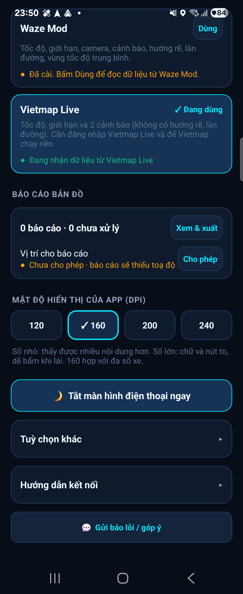
2. Báo cáo lỗi bản đồ ngay trên xe
Gặp sai tốc độ, thiếu camera, cảnh báo sai, biển cấm… thì chạm thẻ Báo cáo trên bong bóng (hoặc menu ⚙ → Báo cáo lỗi bản đồ). Tối đa 2 chạm. App lưu vị trí lúc bấm, tốc độ, giới hạn, các cảnh báo đang hiện.
| Chạm Báo cáo | Sai tốc độ: chọn tốc độ đúng (giới hạn đang báo được viền xanh) | Đã lưu, có Hoàn tác |
|---|---|---|
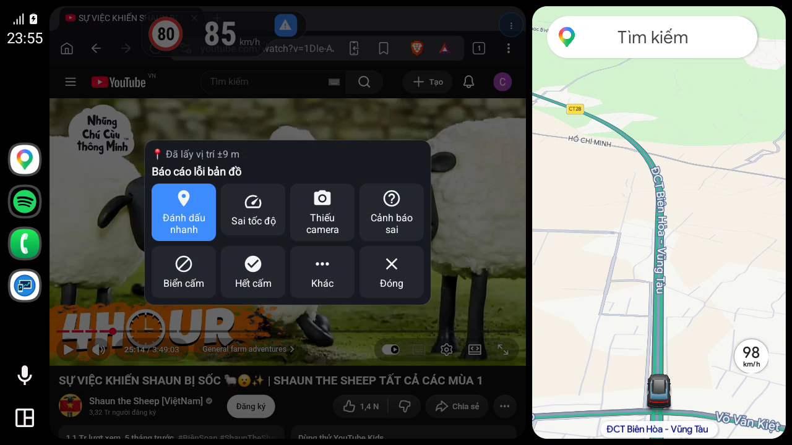 | 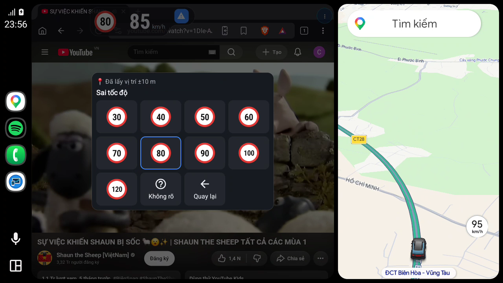 | 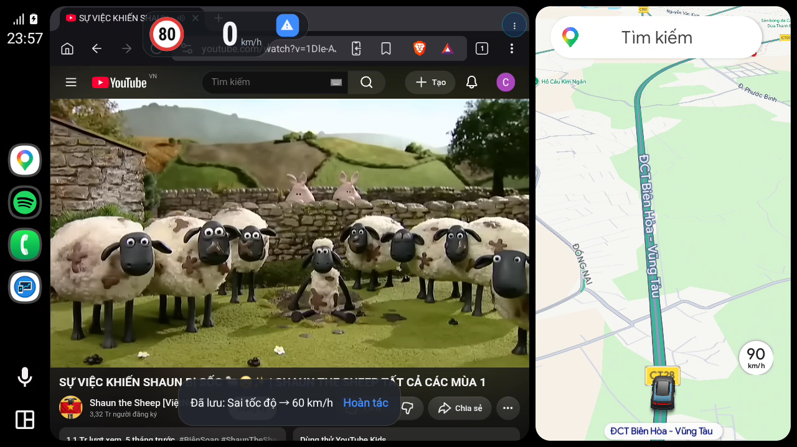 |
- Để yên 10 giây thì tự lưu (mức 1: "Đánh dấu nhanh"; mức 2: loại đó với chi tiết "không rõ"). Chạm ngoài bảng hoặc Đóng thì không lưu. Núm xoay / D-pad / OK của xe dùng được.
- Thẻ media có thêm nút 📍 Đánh dấu: một chạm lưu "Đánh dấu nhanh" mà không cần mở NTV CarCast.
- Trên điện thoại: mục Báo cáo bản đồ → Xem & xuất: sửa loại / ghi chú, đánh dấu đã sửa trên Waze, mở Waze Map Editor / Google Maps / Waze tại chỗ đó, sao chép mô tả (dán được vào Waze), xuất CSV (Excel, Google Sheets, My Maps) hoặc GeoJSON, chia sẻ hoặc lưu vào Tải xuống.
- Cần cho phép vị trí (chỉ khi đang dùng) ở mục Báo cáo bản đồ; không cho phép thì báo cáo vẫn lưu nhưng thiếu toạ độ. Báo cáo chỉ nằm trong máy, chỉ ra ngoài khi bạn bấm Xuất.
- Waze Mod không cho app khác gửi báo cáo thẳng vào Waze, nên app tự lưu để bạn sửa sau trên Waze Map Editor.
3. Tốc độ trên thẻ media cạnh bản đồ
Android Auto luôn để một thẻ "đang phát" cạnh bản đồ. NTV CarCast giờ có thêm app media CarCast Tốc độ: thẻ của nó hiện biển giới hạn to, tốc độ hiện tại (trắng; chạm giới hạn thì cam; vượt tốc thì đỏ) và mục quan trọng nhất phía trước (camera, cảnh báo hoặc hướng rẽ). Hai dòng chữ dưới thẻ là các mục kế tiếp: rẽ, kẹt xe (+ số phút), đổi tốc độ sắp tới, vùng tốc độ trung bình, tên đường đang đi.
| Thẻ cạnh Google Maps | Màn đang phát của CarCast Tốc độ |
|---|---|
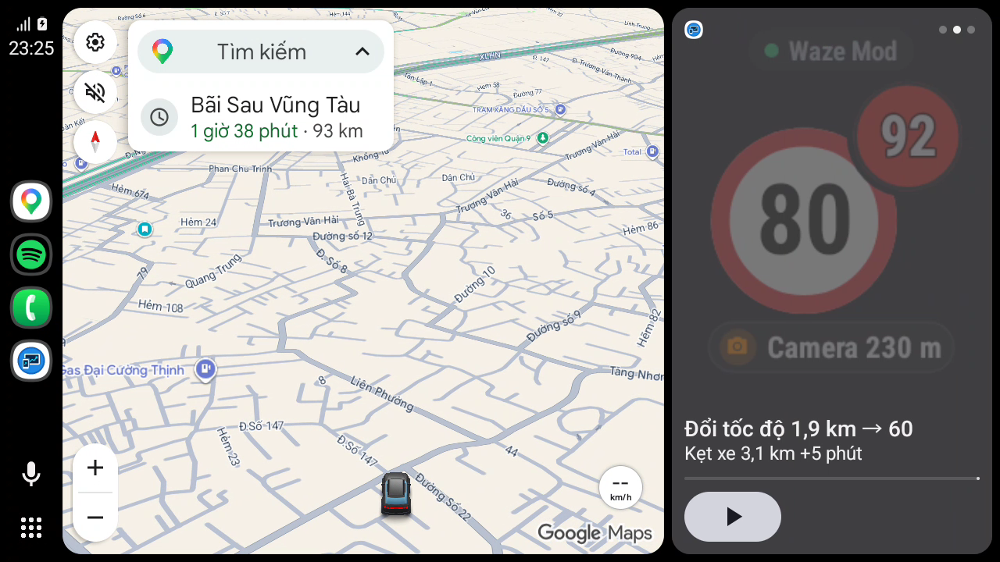 | 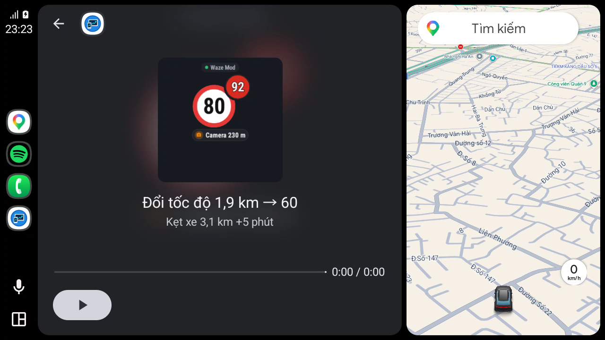 |
Cách dùng:
- Bật bong bóng tốc độ như trước (app điện thoại → Bong bóng tốc độ → Dọc hoặc Ngang). Tuỳ chọn Tốc độ trên thẻ media ngay dưới bản xem trước, mặc định bật.
- Trên xe: mở lưới ứng dụng → CarCast Tốc độ một lần. Từ đó thẻ cạnh bản đồ có tốc độ mỗi khi Waze đang chạy.
Cần biết:
- Thẻ chỉ dành cho app media dùng gần nhất. Nếu vừa nghe Spotify / YT Music thì thẻ đầu là app đó; chạm dấu chấm ở góc trên thẻ để sang thẻ CarCast Tốc độ.
- CarCast Tốc độ không phát gì: nút phát trên thẻ không làm gì, không giành âm thanh hay nút media của app nhạc.
- Số tốc độ trên ảnh thẻ đổi tối đa mỗi 3 giây (Android Auto nháy nhẹ mỗi lần đổi ảnh). Vượt tốc, đổi giới hạn, cảnh báo mới thì đổi ngay.
4. Bong bóng tốc độ gọn và nhẹ hơn
- Bản xem trước trên điện thoại dùng dữ liệu mẫu (rẽ, làn, camera, đổi tốc độ), nên ở nhà Waze chưa chạy cũng chỉnh được kiểu, cỡ, độ đậm và thấy ngay kết quả. Trạng thái kết nối thật nằm ở mục Nguồn dữ liệu.
- Độ đậm nền chỉnh được: 50 / 65 / 80 / 90% (Tuỳ chỉnh bong bóng). Mặc định 80%.
- Đang chạm màn hình xe (kéo bản đồ, cuộn trang) thì bong bóng vẽ thưa lại, nhường máy cho app đang dùng.
- Nút mở menu trên xe đổi thành bánh răng ⚙ (trước là ⋮). Bong bóng kéo đè lên được nút ⚙ (trước đây tự né ra chỗ khác); bong bóng che nút thì kéo bong bóng sang bên để mở menu.
- Sắp tới nút giao: hướng rẽ và làn đường luôn lên ngay cạnh khối tốc độ. Trước đây ở chế độ Đầy đủ, đôi khi phải đợi tới lần cảnh báo đổi mới thấy.
- Dải ngang bỏ vạch ngăn thừa ở chỗ nối với khối tốc độ. Kẹt xe ghi "+5 phút" thay cho "+5'".
- Sửa: chạm vào bản xem trước trên điện thoại không còn đổi nhầm Đầy đủ / Gọn.
Nếu bạn đang dùng v1.2.0
v1.4.0 gồm luôn mọi thứ của bản trước đó (chưa phát hành rộng):
- Bong bóng tốc độ từ Waze Mod V14+, nổi trên app đang cast: biển giới hạn + tốc độ, tới 3 cảnh báo (camera có thanh đếm ngược, cảnh sát, kẹt xe, nguy hiểm, đổi tốc độ…), hướng rẽ, làn đường, vùng tốc độ trung bình. Hai kiểu Dọc (chữ L) / Ngang (dải mỏng), Đầy đủ / Gọn, kéo tới đâu nằm đó, chạm để đổi Đầy đủ / Gọn.
- Chia đôi / chia 3 / cửa sổ nổi mát máy hơn: app trong ô nhỏ vẽ đúng cỡ ô (trình duyệt phát video ở ô chia đôi tốn ít hơn khoảng 20% CPU). Riêng Waze vẫn dùng cách cũ.
- Menu ⚙ trên xe có mục Bong bóng tốc độ: Tắt / Dọc / Ngang; app điện thoại gọn hơn.
- Kiểm tra bản mới qua trang chủ NTV CarCast thay vì GitHub.
Cập nhật từ v1.2.0 / v1.3.0
- Tải NTV-CarCast-v1.4.0.apk bằng nút Tải APK của bản này.
- Cài đè lên bản cũ, không cần gỡ (cài đặt cũ vẫn còn):
adb install -r -i com.android.vending NTV-CarCast-v1.4.0.apkHoặc cài bằng KingInstaller như lần đầu.
- Mở LSPosed xem NTV CarCast vẫn tích System Framework + Android Auto.
- Khởi động lại điện thoại.
Lưu ý
- Bong bóng, thẻ media và báo cáo cần Waze Mod V14+ hoặc Vietmap Live đang chạy (chạy nền được). Waze chính thức từ Play không có dữ liệu cho app khác.
- Vietmap Live đọc từ widget của Vietmap, nên số có thể trễ khoảng 1 giây. Đã thử với Vietmap Live 3.4.3; bản Vietmap khác có thể đổi widget.
- Đã thử trên Desktop Head Unit với Galaxy Z Flip3, dùng vị trí giả lập. Chưa thử trên xe thật.
- Không thao tác trên app khi đang lái xe.
Yêu cầu
| Android | 10 trở lên (tắt màn hình khi cast: 12 trở lên) |
| Root | Magisk / KernelSU / APatch |
| Xposed | LSPosed, scope System Framework + Android Auto |
| Bong bóng / thẻ media / báo cáo | Waze Mod V14+ hoặc Vietmap Live 3.4+ |
| Đã thử trên | Galaxy Z Flip3 · Android 15 · Desktop Head Unit · Android Auto 17.8 |
Kiểm tra file
SHA-256 722c005302aefcfcf675df2ee3a5c2e837cb17d7205ab875754d02df57e5e357 NTV-CarCast-v1.4.0.apkv1.3.017/10/2026
Bản này có bong bóng tốc độ lấy dữ liệu từ Waze: tốc độ, biển giới hạn, camera, cảnh báo giao thông, hướng rẽ và làn đường, nổi ngay trên app bạn đang xem trên xe. Ngoài ra chia đôi / chia 3 mát máy hơn và menu gọn hơn.
⚠️ Vẫn cần điện thoại đã root + LSPosed như cũ. Cập nhật xong nhớ khởi động lại điện thoại.
Có gì mới
1. Bong bóng tốc độ từ Waze Mod
Xem video hay dùng app khác trên xe mà vẫn thấy tốc độ, giới hạn và cảnh báo phía trước, khỏi phải mở bản đồ.
| Màn hình dài: chia đôi (video + Google Maps) + bong bóng | Màn hình thường: video + bong bóng, Google Maps ở bảng bên phải |
|---|---|
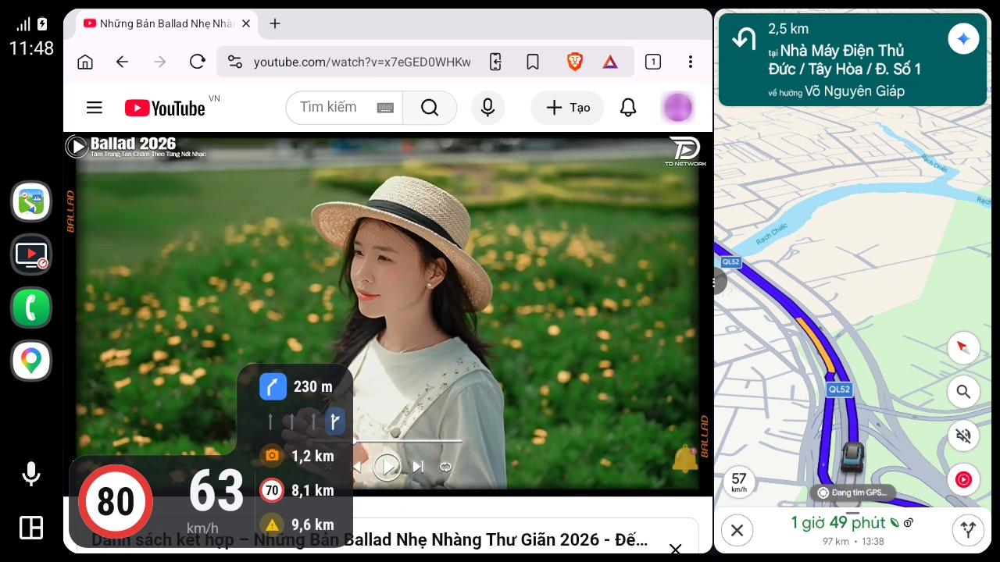 | 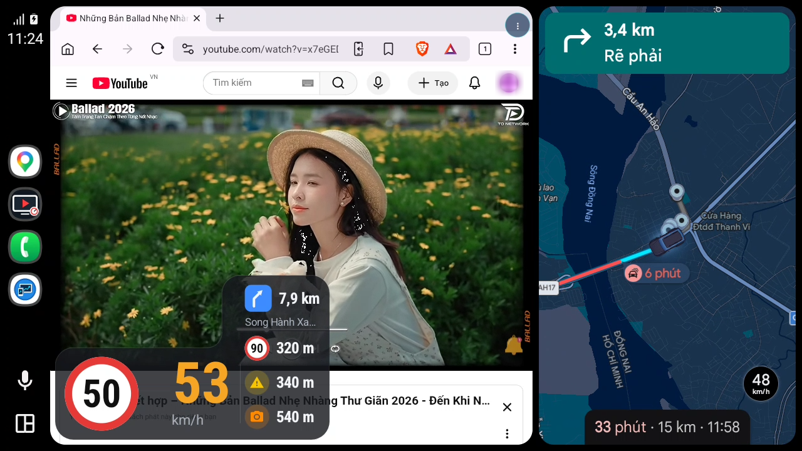 |
Bong bóng hiện gì:
- Biển giới hạn và tốc độ hiện tại, to, ở bên trái. Chạm giới hạn thì số chuyển cam; vượt tốc thì khối tốc độ nháy đỏ.
- Tới 3 cảnh báo gần nhất: camera (có thanh đếm ngược khi còn dưới 500 m), cảnh sát, kẹt xe (kèm số phút chậm thêm), nguy hiểm, đổi tốc độ sắp tới (hiện luôn biển mới)…
- Khi dẫn đường: hướng rẽ + khoảng cách + tên đường, làn đường (làn nên đi tô xanh), vùng tốc độ trung bình.
- Sắp tới nút giao (còn dưới 500 m): rẽ và làn đường được ưu tiên, đứng ngay cạnh khối tốc độ.
- Không cần dẫn đường vẫn có tốc độ, giới hạn và cảnh báo trên đường đang đi. Chỉ cần Waze đang mở (chạy nền cũng được).
Hai kiểu bong bóng:
| Ngang (dải mỏng, ít che app) | Dọc (hình chữ L, xem được nhiều hơn) |
|---|---|
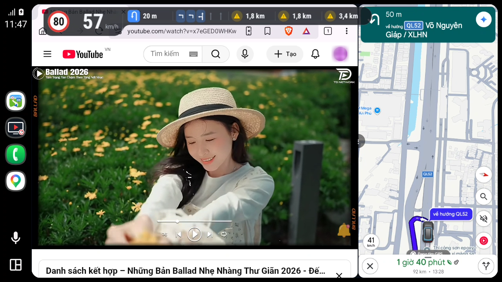 |
- Kéo bong bóng tới chỗ nào cũng được, nhả ra là nằm đúng chỗ đó. Bong bóng tự né nút ⋮ để bạn luôn mở được menu.
- Chạm bong bóng để đổi Đầy đủ ↔ Gọn (Gọn: tốc độ + 1 cảnh báo gần nhất).
- Cỡ Nhỏ / Vừa / Lớn chỉnh trong app trên điện thoại.
Cách bật (một lần):
- Cài Waze Mod V14+ (bản "Đã gỡ AA" cũng được).
- Mở NTV CarCast trên điện thoại → Bong bóng tốc độ → chọn Dọc hoặc Ngang.
- Bấm Cho phép NTV CarCast đọc dữ liệu Waze Mod → chọn Cho phép trong Waze Mod.
- Khi lái: mở Waze, mở NTV CarCast trên xe là thấy bong bóng.
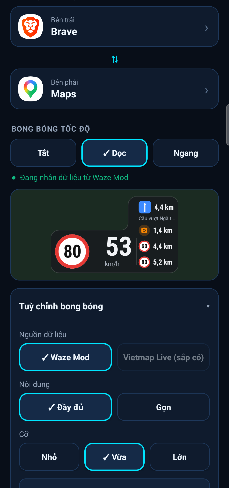
Trên điện thoại có bản xem trước dùng dữ liệu thật và dòng trạng thái (xanh: đang nhận dữ liệu; cam: Waze chưa mở). Bong bóng chuyển xám khi Waze tắt và tự sáng lại khi Waze chạy.
2. Chia đôi / chia 3 / cửa sổ nổi mát máy hơn
Trước đây app trong ô nhỏ phải vẽ hình to hơn cỡ ô rồi thu nhỏ lại. Giờ app vẽ đúng cỡ ô (bố cục và cỡ chữ không đổi). Đo trên máy: trình duyệt phát video ở ô chia đôi tốn ít hơn khoảng 20% CPU.
Riêng Waze vẫn dùng cách cũ, vì Waze tự thoát và mất dẫn đường khi đổi mật độ hiển thị.
3. Menu và cài đặt gọn hơn
- Menu ⋮ trên xe có thêm mục Bong bóng tốc độ: Tắt / Dọc / Ngang. Chú thích ngắn lại.
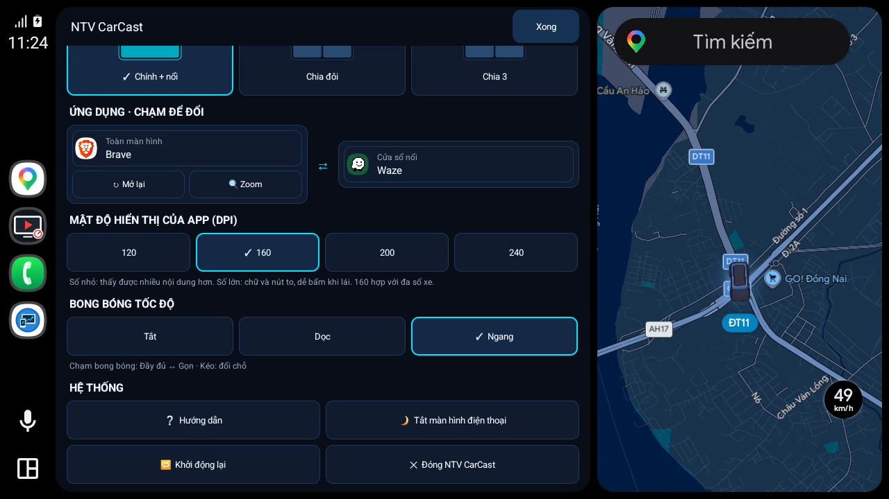
- App trên điện thoại: phần bong bóng đặt ngay dưới Ứng dụng; tuỳ chọn ít dùng gập trong Tuỳ chỉnh bong bóng; mô tả trong Tuỳ chọn khác ngắn lại.
- Cửa sổ nổi thu nhỏ giờ gọi là "Thu gọn" (chữ "bong bóng" chỉ còn dùng cho bong bóng tốc độ).
Gợi ý để máy mát
- Muốn xem tốc độ, camera, hướng rẽ thì dùng bong bóng thay vì cast bản đồ Waze lên một ô: Waze chạy nền để lấy dữ liệu nhẹ hơn nhiều so với vẽ bản đồ.
- Chính + bong bóng là bố cục nhẹ nhất. Chia 3 nặng nhất.
Cập nhật từ v1.2.0
- Tải NTV-CarCast-v1.3.0.apk bằng nút Tải APK của bản này.
- Cài đè lên bản cũ, không cần gỡ (cài đặt cũ vẫn còn):
adb install -r -i com.android.vending NTV-CarCast-v1.3.0.apkHoặc cài bằng KingInstaller như lần đầu.
- Mở LSPosed xem NTV CarCast vẫn tích System Framework + Android Auto.
- Khởi động lại điện thoại.
Cài lần đầu: xem hướng dẫn trong README.
Lưu ý
- Bong bóng cần Waze Mod V14+. Waze chính thức từ Play không có dữ liệu cho app khác.
- Vietmap Live: chưa hỗ trợ (đang làm).
- Đã thử trên Desktop Head Unit với vị trí giả lập. Chưa thử trên xe thật.
- Không thao tác trên app khi đang lái xe.
Yêu cầu
| Android | 10 trở lên (tắt màn hình khi cast: 12 trở lên) |
| Root | Magisk / KernelSU / APatch |
| Xposed | LSPosed, scope System Framework + Android Auto |
| Bong bóng tốc độ | Waze Mod V14+ |
| Đã thử trên | Galaxy Z Flip3 · Android 15 · Desktop Head Unit · Android Auto 17.8 |
Kiểm tra file
SHA-256 ef7e6a2ae4bc1f1bd56525aa010b029c90606d2b7c1825990116e913f37417a3 NTV-CarCast-v1.3.0.apkSử dụng có rủi ro; can thiệp Android Auto có thể vi phạm điều khoản của Google.
v1.2.013/10/2026
Bản này có 3 thứ mới: app chiếm hết màn hình xe, cắm cáp là app tự mở, và app tự báo khi có bản mới.
⚠️ Vẫn cần điện thoại đã root + LSPosed như cũ. Cập nhật xong nhớ khởi động lại điện thoại.
Có gì mới
1. Toàn màn hình: bỏ bảng bên phải
Trên màn hình xe dài, Android Auto luôn chừa một bảng bên phải (nhạc, thông báo, bản đồ). Giờ bạn bỏ được bảng đó, app chiếm hết chiều ngang. Dock bên trái vẫn giữ nguyên.
| Trước | Sau khi bật Toàn màn hình |
|---|---|
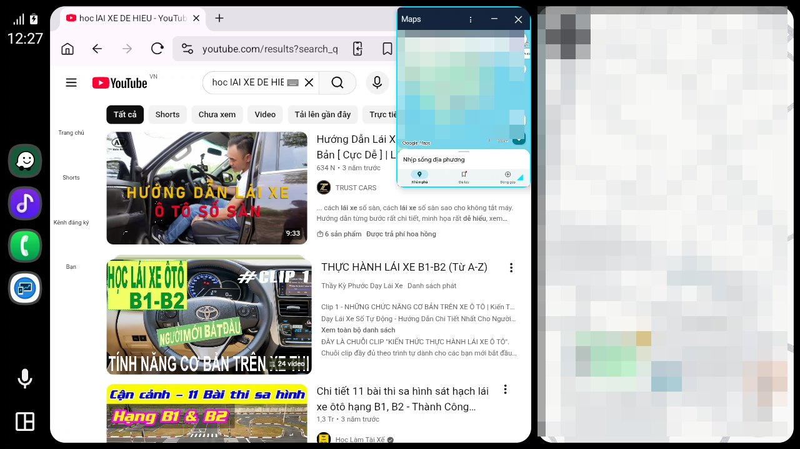 | 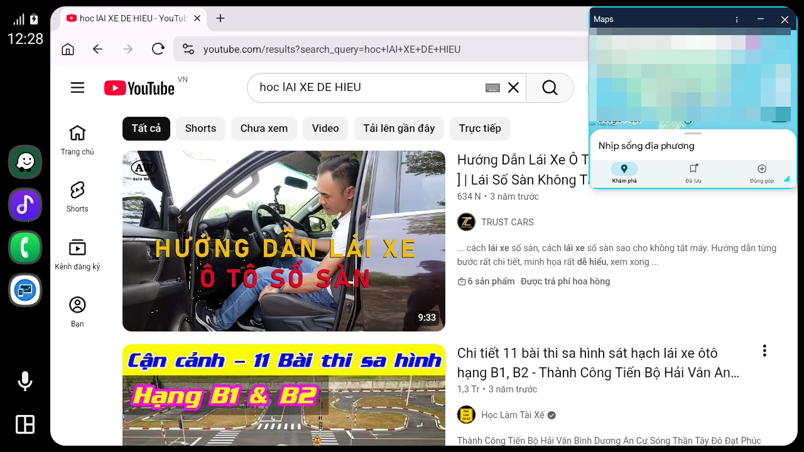 |
- Áp dụng cho mọi app trên Android Auto (Maps, Waze… cũng rộng ra), không riêng NTV CarCast.
- Có tác dụng từ lần kết nối sau. Muốn thấy ngay thì bấm Khởi động lại Android Auto trong app.
- Màn hình xe nhỏ (vốn không có bảng bên phải) thì không có gì thay đổi.
2. Cắm cáp là NTV CarCast tự mở
Bật Tự mở NTV CarCast khi kết nối Android Auto, cắm cáp xong chờ vài giây là app tự lên màn hình xe, khỏi phải bấm.
3. Tự báo khi có bản mới
- Mỗi lần mở app, NTV CarCast hỏi GitHub xem có bản mới không (tối đa 12 tiếng một lần).
- Có bản mới thì báo trên điện thoại (có nút mở trang tải) và báo luôn trên màn hình xe.
- Không muốn thì tắt Kiểm tra cập nhật khi mở app. Muốn kiểm tra liền thì bấm Kiểm tra cập nhật ngay.
Cả 3 tuỳ chọn nằm trong Tuỳ chọn khác của app trên điện thoại:
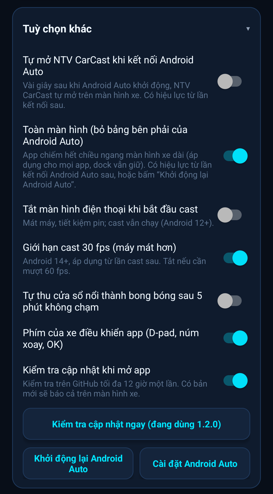
Thay đổi khác
- Bỏ "bong bóng tốc độ" của Wyn / VietMap Live / Waze (bản thử nghiệm). Không làm tiếp nên gỡ luôn cho gọn.
- App giờ xin thêm quyền Internet, chỉ để kiểm tra bản mới trên GitHub. Không gửi dữ liệu gì đi.
- Dọn code thừa, viết lại hướng dẫn cài đặt và tài liệu cho dễ đọc.
Cập nhật từ v1.1.0
- Tải NTV-CarCast-v1.2.0.apk bằng nút Tải APK của bản này.
- Cài đè lên bản cũ, không cần gỡ (cài đặt cũ vẫn còn):
adb install -r -i com.android.vending NTV-CarCast-v1.2.0.apkHoặc cài bằng KingInstaller như lần đầu.
- Mở LSPosed xem NTV CarCast vẫn tích System Framework + Android Auto.
- Khởi động lại điện thoại.
Cài lần đầu: xem hướng dẫn trong README.
Lưu ý
- Toàn màn hình và Tự mở mới thử trên Desktop Head Unit (màn hình 1280×720) với Android Auto 17.8. Xe thật hoặc Android Auto bản khác có thể không chạy. Nếu vậy app chỉ bỏ qua tính năng đó, không làm hỏng Android Auto.
- Xe kết nối chậm thì có thể Android Auto mở app khác đè lên sau khi NTV CarCast tự mở.
- Không thao tác trên app khi đang lái xe.
Yêu cầu
| Android | 10 trở lên (tắt màn hình khi cast: 12 trở lên) |
| Root | Magisk / KernelSU / APatch |
| Xposed | LSPosed, scope System Framework + Android Auto |
| Đã thử trên | Galaxy Z Flip3 · Android 15 · Desktop Head Unit · Android Auto 17.8 |
Kiểm tra file
SHA-256 777f664b17cafdb3239e678ccd5b12a0306838a808261986f228d91cf85d60aa NTV-CarCast-v1.2.0.apkSử dụng có rủi ro; can thiệp Android Auto có thể vi phạm điều khoản của Google.
v1.1.013/10/2026
Bản này thêm chia màn hình 2–3 app, menu mới chọn bố cục bằng hình, và sửa lỗi app nổi bị phóng to sai.
⚠️ Vẫn cần điện thoại đã root (Magisk / KernelSU / APatch) + LSPosed. Sau khi cập nhật phải khởi động lại điện thoại (xem mục "Cập nhật từ v1.0.0").
Ảnh chụp màn hình
| Chính + nổi | Thu thành bong bóng |
|---|---|
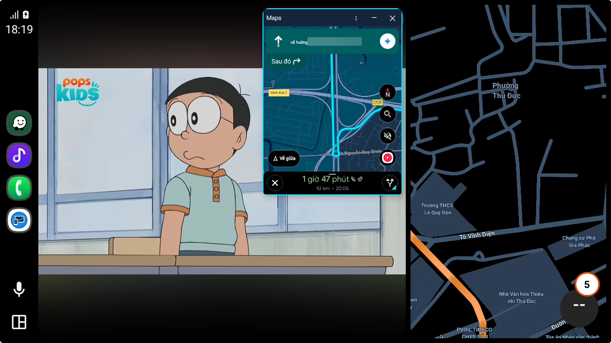 | 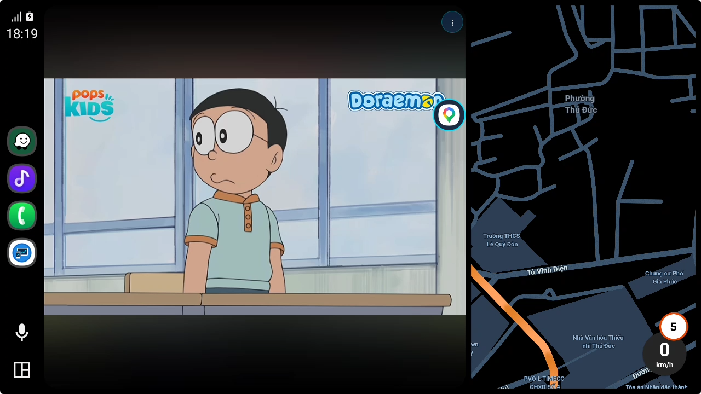 |
| Chia đôi | Chia 3 |
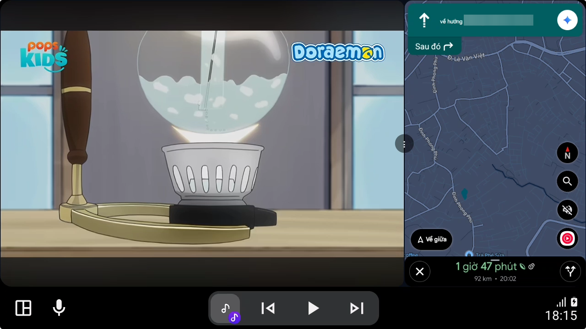 | 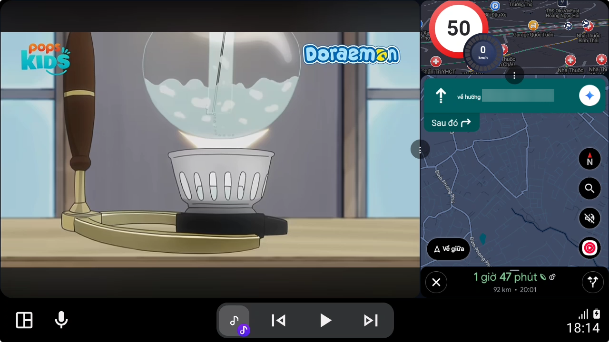 |
Menu ⋮ mới
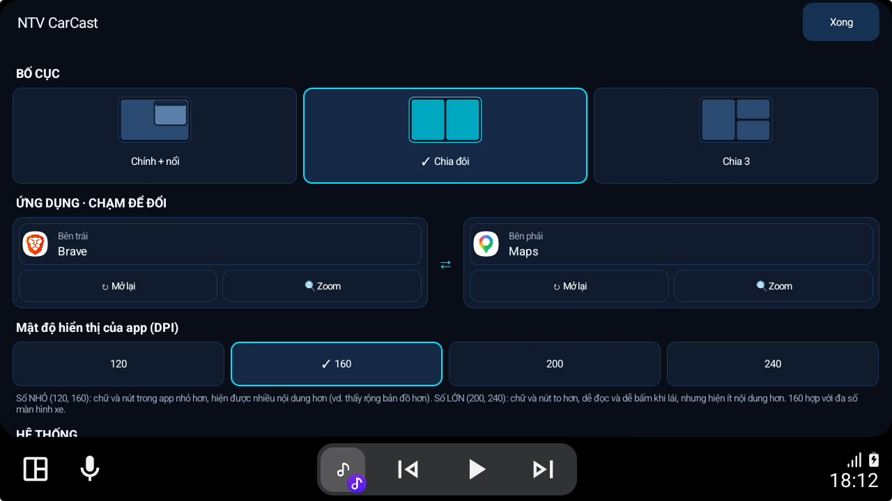
Ứng dụng trên điện thoại (thiết kế lại)
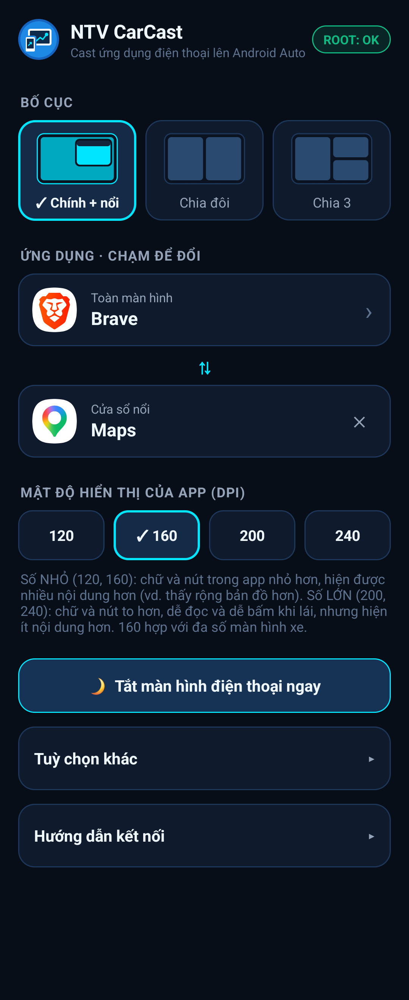
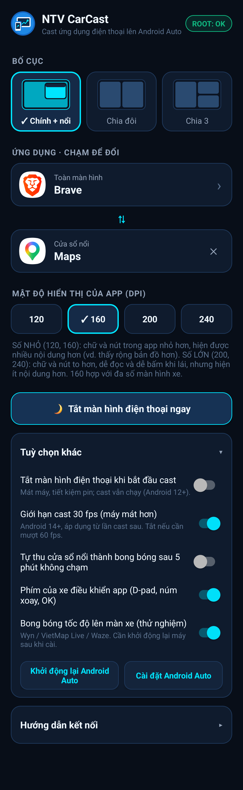
Mới
- 3 bố cục, chọn bằng hình trong menu ⋮:
- Chính + nổi: 1 app toàn màn hình + 1 app dạng cửa sổ nổi hoặc bong bóng (như trước).
- Chia đôi: 2 app cạnh nhau.
- Chia 3: 1 app bên trái + 2 app xếp trên/dưới bên phải.
Ở chia đôi / chia 3, kéo nút ⋮ tròn ở giữa để chỉnh tỉ lệ, chạm vào nút đó để mở menu. Bố cục được nhớ cho lần mở sau.
- Menu gọn hơn: mỗi app có một thẻ riêng.
- Chạm vào thẻ để chọn app khác.
- ↻ Mở lại: mở lại app đó.
- 🔍 Zoom: phóng to một vùng của app.
- ⇄ giữa 2 thẻ: đổi chỗ 2 app. App giữ nguyên trạng thái, vd. Google Maps không mất dẫn đường.
- Zoom một vùng: chỉ hiện một phần app và phóng to lên, vd. đồng hồ tốc độ. Kéo 1 ngón để di chuyển, chụm/mở 2 ngón để phóng.
- Chỉnh DPI ngay trên xe, có chú thích:
- Số nhỏ (120, 160): chữ nhỏ, thấy được nhiều nội dung hơn.
- Số lớn (200, 240): chữ to, dễ bấm khi lái.
- Tự đóng app khi ngắt kết nối Android Auto (rút cáp / tắt xe). Khi chỉ chuyển sang màn hình khác của Android Auto, app vẫn được giữ 10 phút như trước để không mất dẫn đường.
Sửa lỗi
- App nổi bị phóng to sai, chạm không ăn. Ô nổi bị giữ chế độ zoom cũ dù đã tắt; giờ zoom của từng ô luôn khớp với lựa chọn.
- Kéo ◢ đổi kích thước làm app nổi phóng to. Trong lúc kéo (◢ hoặc thanh chia), hình giữ đúng tỉ lệ, không bị kéo giãn. Thả tay mới cập nhật kích thước, chỉ 1 lần, nên kéo mượt hơn.
- Đổi chỗ 2 app có lúc bị đứng hình ở khung cũ: đã sửa.
- Zoom 2 ngón: phóng quanh điểm giữa 2 ngón. Nhấc 1 ngón rồi kéo tiếp không còn bị nhảy. Kéo 2 ngón giờ di chuyển được vùng đang zoom.
Thay đổi
- Thiết kế lại ứng dụng trên điện thoại, cùng cách bố trí với menu trên xe:
- chọn bố cục bằng hình; đổi bố cục trên điện thoại thì xe đổi theo ngay khi đã đủ app;
- mỗi ô một thẻ (chạm để chọn app), nút ⇅ đổi chỗ 2 app (trên xe giữ nguyên trạng thái app);
- DPI và nút Tắt màn hình điện thoại ngay trên màn hình chính;
- các công tắc ít dùng gom vào Tuỳ chọn khác, hướng dẫn gom vào Hướng dẫn kết nối, cả hai gập sẵn (hướng dẫn tự mở khi chưa có root);
- bỏ hàng "Gần đây", lựa chọn "Khi bắt đầu cast" (app tự nhớ trạng thái lần trước) và các đoạn chú thích dài.
- Bỏ màn Cài đặt trên xe. Chọn app, DPI và hướng dẫn đều nằm trong menu ⋮.
- Bỏ tuỳ chọn "Vị trí nút điều khiển" (cả trên xe và trên điện thoại). Nút ⋮ cố định ở góc trên bên phải.
- Bỏ các nút "Quay lại trong app", "Trở về Android Auto" và "Đóng ứng dụng nổi" trong menu. Cửa sổ nổi có sẵn nút — (thu thành bong bóng) và ✕ (đóng); "Đóng NTV CarCast" vẫn ở mục Hệ thống.
- Chọn lại đúng app đang chạy ở một ô sẽ không mở lại app đó. Đổi sang app khác thì zoom của ô đó tự tắt.
Cập nhật từ v1.0.0
- Cài đè:
adb install -r -i com.android.vending NTV-CarCast-v1.1.0.apk. Cùng package, cùng chữ ký, cài đặt cũ được giữ nguyên. - Mở LSPosed và kiểm tra NTV CarCast vẫn tích System Framework + Android Auto.
- Khởi động lại điện thoại. Cần làm để hook hệ thống nhận ô thứ 3 của Chia 3; nếu không, ô thứ 3 có thể ngừng chạy khi tắt màn hình điện thoại.
Cài mới từ đầu: xem README.
Yêu cầu
| Android | 10 trở lên (tắt màn hình khi cast: 12 trở lên) |
| Root | Magisk / KernelSU / APatch |
| Xposed | LSPosed, scope System Framework + Android Auto |
| Đã thử trên | Galaxy Z Flip3 · Android 15 · Desktop Head Unit |
Giới hạn đã biết
- Chia 3 = 3 app cùng vẽ: máy nóng và tốn pin hơn. Nên tắt màn hình điện thoại khi dùng lâu.
- Zoom 2 ngón chỉ hoạt động nếu màn hình xe có cảm ứng đa điểm. Nhiều xe chỉ có 1 điểm chạm; khi đó dùng nút +/− của app (vd. Google Maps).
- Zoom một vùng là phóng to hình đã vẽ, nên chữ hơi mờ ở mức zoom cao.
- App chưa qua bước thiết lập lần đầu (vd. Chrome mới cài) có thể hiện màn hình trống; mở app đó trên điện thoại một lần trước.
- YouTube chính thức không phát trên màn hình ảo: dùng NewPipe hoặc trình duyệt ở chế độ máy tính.
- App dùng bảo vệ nội dung (DRM, chặn chụp màn hình) sẽ hiện màn hình đen.
- Chưa thử trên xe thật và Android 12–14.
- Không thao tác trên app khi đang lái xe.
Kiểm tra file
SHA-256 2944658a7a53e21c44ff28a454bf90e5b7fddbc08d31cdfcdb140450f9bb9c14 NTV-CarCast-v1.1.0.apkSử dụng có rủi ro; can thiệp Android Auto có thể vi phạm điều khoản của Google.
v1.0.010/10/2026
Bản chính thức đầu tiên, tập trung vào ổn định và mát máy. Bàn phím và giọng nói riêng của NTV CarCast đã được gỡ: app được cast đã có sẵn tìm kiếm của nó (🎤 của Google Maps, bàn phím của Brave…), dùng trực tiếp trên màn hình xe.
⚠️ Vẫn cần điện thoại đã root (Magisk / KernelSU / APatch) + LSPosed.
Mới
- Phím của xe điều khiển app: D-pad, núm xoay và nút OK của xe gửi thẳng vào app đang cast. Nút Back của xe vẫn hoạt động như Android Auto. Bật/tắt trong cài đặt.
- Tự thu cửa sổ nổi thành bong bóng sau 5 phút không chạm, để đỡ tốn pin. Bật/tắt trong cài đặt.
- Tự tắt màn hình điện thoại khi máy quá nóng: tối đa 1 lần mỗi 10 phút. Bật/tắt trong cài đặt.
- "Mở lại
" trong menu ⋮. App đang cast không còn hiện trong Recents của điện thoại, nên bấm "Đóng tất cả" trên điện thoại không làm mất màn hình trên xe.
Thay đổi
- Gỡ bàn phím xe và giọng nói của NTV CarCast, gồm nút ⌨ / 🎤, lịch sử tìm kiếm và mục cài đặt liên quan. Hãy dùng tìm kiếm / giọng nói có sẵn trong app (vd. 🎤 trong Google Maps).
- Bàn phím trên màn hình ảo không ổn định: Samsung Keyboard bị crash, Gboard bị treo.
- Giọng nói không tin cậy được: Android chặn micro khi app chạy nền, và Google Maps bỏ qua lệnh khi điện thoại đang khoá.
- Không còn xin quyền micro. App chỉ cần quyền thông báo.
- Danh sách chọn app trên xe không còn ô gõ chữ; chạm chọn trực tiếp trong danh sách.
- Lệnh root chạy ổn định hơn, không còn lỗi lệnh mở app thỉnh thoảng thất bại.
Cập nhật từ v0.2.0
- Cài đè:
adb install -r -i com.android.vending NTV-CarCast-v1.0.0.apk. Cùng package và cùng chữ ký, nên không cần gỡ bản cũ; cài đặt của bạn được giữ nguyên. - Mở LSPosed và kiểm tra NTV CarCast vẫn tích System Framework + Android Auto.
- Khởi động lại điện thoại.
Cài mới từ đầu: xem README.
Yêu cầu
| Android | 10 trở lên (tắt màn hình khi cast: 12 trở lên) |
| Root | Magisk / KernelSU / APatch |
| Xposed | LSPosed, scope System Framework + Android Auto |
| Đã thử trên | Galaxy Z Flip3 · Android 15 · Desktop Head Unit |
Giới hạn đã biết
- YouTube: app YouTube chính thức không phát video trên màn hình ảo. Dùng NewPipe, hoặc xem bằng trình duyệt ở chế độ máy tính (desktop).
- App dùng bảo vệ nội dung (DRM, chặn chụp màn hình) sẽ hiện màn hình đen.
- Nếu NTV CarCast vừa bị tắt hẳn (sau khi cập nhật), lần chạm đầu vào biểu tượng có thể mở Google Maps của Android Auto. Chạm lần nữa để mở NTV CarCast.
- Phím của xe mới thử bằng mã, chưa thử trên xe thật. Chưa thử trên Android 12–14.
- Không thao tác trên app khi đang lái xe.
Kiểm tra file
SHA-256 5cd75f3fc0bf2af3d8f4aabe3a2b9a7826d9f080d41502aef1ee872b19fcc007 NTV-CarCast-v1.0.0.apkSử dụng có rủi ro; can thiệp Android Auto có thể vi phạm điều khoản của Google.
v0.2.010/10/2026
Bản phát hành đầu tiên của NTV CarCast: đưa một ứng dụng trên điện thoại (Google Maps, VietMap, Waze, trình duyệt, NewPipe…) lên màn hình Android Auto và dùng như app thật.
⚠️ Cần điện thoại đã root (Magisk / KernelSU / APatch) + LSPosed. Không dùng được trên máy chưa root.
Có gì trong bản này
- Cast 1 ứng dụng lên Android Auto. App nằm ở vùng ứng dụng (~2/3 màn hình); dock và bảng thông báo, nhạc, Waze của Android Auto vẫn như bình thường.
- Chạm theo thời gian thực: kéo bản đồ theo ngón tay, zoom 2 ngón, giữ lâu.
- Tìm kiếm trên xe: ⌨ bàn phím xe hoặc 🎤 giọng nói (Tiếng Việt / English). Gõ thẳng vào ô tìm kiếm của app (hỗ trợ tiếng Việt có dấu), hoặc gửi Tìm địa điểm / Dẫn đường cho app bản đồ.
- Tắt màn hình điện thoại vẫn chạy: hình và cảm ứng trên xe không bị ảnh hưởng (Android 12+).
- Không mất trạng thái khi chuyển sang màn hình Android Auto khác rồi quay lại (vd. Google Maps vẫn giữ dẫn đường).
- Ứng dụng nổi: chạy thêm một app đè lên app chính dạng cửa sổ (kéo, đổi kích thước) hoặc bong bóng (tạm dừng, không tốn pin); đổi chỗ với app chính bằng 1 chạm.
- Chuyển nhanh giữa các app dùng gần đây từ menu ⋮ trên xe.
- Mát máy, đỡ tốn pin: giới hạn 30 fps (Android 14+, tắt được), tạm dừng vẽ khi mở menu cài đặt, cảnh báo khi máy nóng và tự thu ứng dụng nổi khi máy quá nóng.
- Giao diện Tiếng Việt / English.
Cài đặt nhanh
- Cài APK, đánh dấu là cài từ Play Store để Android Auto nhận app:
adb install -i com.android.vending NTV-CarCast-v0.2.0.apk(hoặc dùng KingInstaller). - LSPosed → Modules → NTV CarCast: bật module, tích System Framework + Android Auto, rồi khởi động lại máy.
- Mở NTV CarCast trên điện thoại → Magisk hỏi quyền root → Cho phép vĩnh viễn.
- Chọn Ứng dụng chính (vd. Google Maps) → cắm xe → mở NTV CarCast trên màn hình Android Auto.
Hướng dẫn chi tiết và xử lý sự cố: xem README.
Yêu cầu
| Android | 10 trở lên (tắt màn hình khi cast: 12 trở lên) |
| Root | Magisk / KernelSU / APatch |
| Xposed | LSPosed, scope System Framework + Android Auto |
| Đã thử trên | Galaxy Z Flip3 · Android 15 · Android Auto 17.8 · Desktop Head Unit |
Giới hạn đã biết
- YouTube: app YouTube chính thức không phát video trên màn hình ảo. Dùng NewPipe, hoặc xem trong trình duyệt mà không bật fullscreen. Brave/Chrome bị lệch video khi fullscreen; đây là lỗi của Chromium.
- App dùng bảo vệ nội dung (DRM, chặn chụp màn hình) sẽ hiện màn hình đen.
- Bàn phím của Android Auto có thể bị khoá khi xe đang chạy; khi đó dùng 🎤 giọng nói.
- Chưa thử trên xe thật và trên Android 12–14; hãy báo lỗi nếu gặp vấn đề.
- Không thao tác trên app khi đang lái xe.
Cập nhật từ bản debug / bản thử nghiệm
Từ bản này app có package mới com.ntv.carcast (bản thử nghiệm trước là com.aasinglecast). Hãy gỡ bản cũ (adb uninstall com.aasinglecast), cài bản này, rồi bật lại module NTV CarCast trong LSPosed (2 scope) và khởi động lại máy. Cài đặt trong app cũ không được chuyển sang.
Kiểm tra file
SHA-256 cf4ccf5e92010599244854d7fae9c1de47cc6168131c0a5827c609d86a697b6f NTV-CarCast-v0.2.0.apkSử dụng có rủi ro; can thiệp Android Auto có thể vi phạm điều khoản của Google.